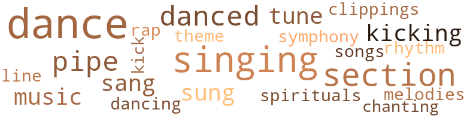
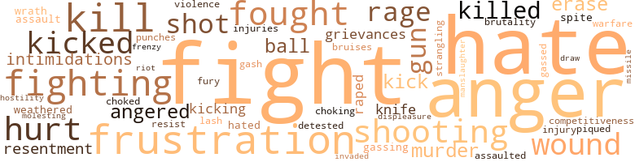
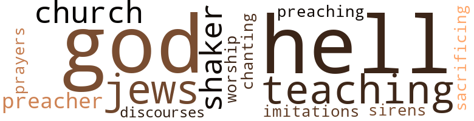

Black Schoolmaster, by Jarry, Hawke (1970)
44 music-related terms matched in this text.
Most frequent terms in this topic: dance (7); singing (5); section (4); danced (3); pipe (3)
clipping.n.01
Definition: an excerpt cut from a newspaper or magazine
| word | sentence |
|---|---|
| clippings | Newspaper clippings from the past year were still pinned on the board by bright-colored thumb tacks . |
dance.n.01
Definition: an artistic form of nonverbal communication
| word | sentence |
|---|---|
| dance | They had struck up a strange , sacrilegious dance . |
| dance | A death dance , intimately , almost reverently , danced . |
| dance | America 's imperialistic holdings and domestic colonies , coupled and joined the dance ; reluctantly and unnaturally they entered the greedy gyrations . |
| dance | He was trying to get in a Christmas dance at the school ; they would n't let him in , and this white dude was getting tough . |
| dance | J. T. tried to get around him into the dance , but this gray stopped him , and so J. T. hit him in the head with a pipe and when he fell kicked him in the chest . |
| dance | They said the white man ai n't got no business in a black neighborhood telling a black boy he ca n't come into a dance in his own neighborhood . |
dance.v.02
Definition: move in a pattern; usually to musical accompaniment; do or perform a dance
| word | sentence |
|---|---|
| dancing | It could have been that J. T. 's sometime radiant being was there dancing the boogaloo mischievously around the carved desk , laughing contemptously because I had failed him . |
dance.v.03
Definition: skip, leap, or move up and down or sideways
| word | sentence |
|---|---|
| dance | I finally managed to ask her to dance . |
| danced | As we danced she moved her slim body close to me . |
| danced | Entwined together , these systems danced toward death . |
| danced | The repressive music to which they danced spawned and intensified our war at home and abroad . |
kick.v.04
Definition: kick a leg up
| word | sentence |
|---|---|
| kicking | You were yelling and kicking and blood was running all over your face . |
| kicking | You were my friend , so I ran and dived on his back like Superman and started kicking and hitting him , but at thirteen I could n't hurt him much . |
| kick | The only thing he wants to do is pick up a black girl and take her some place and screw her and then kick her out . " |
music.n.01
Definition: an artistic form of auditory communication incorporating instrumental or vocal tones in a structured and continuous manner
| word | sentence |
|---|---|
| music | The music stirred feelings deep inside the restive crowd . |
| music | The repressive music to which they danced spawned and intensified our war at home and abroad . |
pipe.n.04
Definition: a tubular wind instrument
| word | sentence |
|---|---|
| pipe | Inside each cell was a topless toilet stool , a regulation army bed , and a sink with gray pipe legs . |
| pipe | Before I could answer , he went on excitedly , " J. T. busted a gray dude in the head with an iron pipe at McKinley school . |
| pipe | J. T. tried to get around him into the dance , but this gray stopped him , and so J. T. hit him in the head with a pipe and when he fell kicked him in the chest . |
rap.n.05
Definition: genre of African-American music of the 1980s and 1990s in which rhyming lyrics are chanted to a musical accompaniment; several forms of rap have emerged
| word | sentence |
|---|---|
| rap | He smiled broadly and was about to challenge my banter , when a light , almost humble , rap came at the door . |
rhythm.n.04
Definition: the arrangement of spoken words alternating stressed and unstressed elements
| word | sentence |
|---|---|
| rhythm | I was unsure whether optimum communication could take place in my school-learned language , which was different in vocabulary , structure , syntax and rhythm . |
section.n.01
Definition: a self-contained part of a larger composition (written or musical)
| word | sentence |
|---|---|
| section | My eyes began rushing through the Wanted section and then fixed on an ad printed in bold type : BOYS WANTED . |
| section | I was able to move her to another section of the bar , away from Tweet , who was now almost drunk . |
| section | One section of the text in the course dealt with curriculum planning for the slow learner and the gifted child . |
| section | He 's got all the money in the black section sewed up tight . |
sing.v.02
Definition: produce tones with the voice
| word | sentence |
|---|---|
| sung | The younger people , dressed in denims and wearing naturals , were singing freedom songs , the kind black people have always sung . |
| sang | We sat and sang fervently about freedom . |
| sang | She tucked her stockinged legs under her and to one side as she sang . |
singing.n.01
Definition: the act of singing vocal music
| word | sentence |
|---|---|
| singing | It was doubly strange we should be in that place singing those slave melodies . |
| singing | The younger people , dressed in denims and wearing naturals , were singing freedom songs , the kind black people have always sung . |
| singing | I wondered why I was there singing about some abstract thing called freedom , when , ostrich-like , I could bury myself in a neat apartment , allowing myself to laugh foolishly , naively , and lightly at a nation 's genocidal history and tendencies . |
| singing | From the front of the van several men and women yelled at the cursers to restrain themselves and start singing " We Shall Overcome . " |
| singing | In disgust she walked to the center of the intersection , lowered herself to the pavement and began singing . |
song.n.01
Definition: a short musical composition with words
| word | sentence |
|---|---|
| songs | The younger people , dressed in denims and wearing naturals , were singing freedom songs , the kind black people have always sung . |
spiritual.n.01
Definition: a kind of religious song originated by Blacks in the southern United States
| word | sentence |
|---|---|
| spirituals | We spent our nights at the cell doors harmonizing spirituals and old blues tunes . |
symphony.n.01
Definition: a long and complex sonata for symphony orchestra
| word | sentence |
|---|---|
| symphony | It comes gradually , fearfully , hopefully like man 's immortal symphony , building slowly to lightness and then to darkness , orchestrated by the intense struggling shadows of hate and love . |
theme.n.03
Definition: (music) melodic subject of a musical composition
| word | sentence |
|---|---|
| theme | " I understand in some schools that have instituted black programs , the general theme is ' I want some of the action , ' meaning a very personal I . |
tone.v.01
Definition: utter monotonously and repetitively and rhythmically
| word | sentence |
|---|---|
| chanting | Albert Bell , a student in the back , was chanting to J. T. 's oration , " Talk to him , baby , tell 'em what 's happening . " |
tune.n.01
Definition: a succession of notes forming a distinctive sequence
| word | sentence |
|---|---|
| tunes | We spent our nights at the cell doors harmonizing spirituals and old blues tunes . |
| melodies | It was doubly strange we should be in that place singing those slave melodies . |
| tune | The pretty cheerleaders led the students in a variety of morale-building cheers from the moment the team bounded onto the court to the tune " Sweet Georgia Brown , " right through to the final buzzer . |
| line | I had even ridden this line before , but I had never been so sensitive to the neighborhood . |
whistle.v.05
Definition: make a whining, ringing, or whistling sound
| word | sentence |
|---|---|
| sung | They had always been distant , untouchable , feared , to be sung about but never to be challenged . |
164 violence-related terms matched in this text.
Most frequent terms in this topic: fight (16); hate (13); anger (11); fought (6); fighting (6)
anger.n.01
Definition: a strong emotion; a feeling that is oriented toward some real or supposed grievance
| word | sentence |
|---|---|
| anger | I asked J. T. bluntly and with growing anger , " What did he try to do ? " |
| anger | My anger had subsided but not disappeared , and I answered bitterly , " I want to know why you have a seventeen-year-old boy who is in jail for assault in the same tier with murderers and repeaters . " |
| anger | His slight body was shaking with anger . |
| anger | His face lit up with relief and then turned purple with anger . |
| anger | The anger started up again and I felt rather silly for being embarrassed . |
| anger | The strain of years showed ; the anger and frustration revealed itself . |
| anger | His expression was one of anger and frustration as he retorted , " We shall overcome , my ass ! |
| anger | I answered her challenge with anger . |
| anger | The result would be bottled anger , immediately contained but potentially explosive . |
| anger | He began to speak in a subdued tone , tinged with anger and sarcasm . |
| anger | I felt a surge of anger , then felt it subside . |
anger.v.02
Definition: become angry
| word | sentence |
|---|---|
| angered | The hypocrisy contained in the word angered me . |
| angered | Some had been angered ; some had enjoyed it ; others had sympathized and even joined the protest . |
assail.v.01
Definition: attack someone physically or emotionally
| word | sentence |
|---|---|
| assaulted | My mind began to ache because my manliness was being assaulted . |
bruise.n.01
Definition: an injury that doesn't break the skin but results in some discoloration
| word | sentence |
|---|---|
| bruises | Too much rouge on her cheeks gave the appearance of new bruises . |
bullying.n.01
Definition: the act of intimidating a weaker person to make them do something
| word | sentence |
|---|---|
| intimidations | The administration makes it no better - subtle intimidations are made often enough . |
| intimidations | It 's the duty of all people to fight intimidations and make this so-called democracy work . " |
competitiveness.n.01
Definition: an aggressive willingness to compete
| word | sentence |
|---|---|
| competitiveness | Was it the competitiveness taught in wider society ? |
craze.n.02
Definition: state of violent mental agitation
| word | sentence |
|---|---|
| frenzy | He was a tall white man , who seemed in an angry frenzy most of the time . |
cut.n.05
Definition: a wound made by cutting
| word | sentence |
|---|---|
| gash | Among those screaming out the window was a teenager with a torn shirt and blood streaming from a gash in his head . |
displeasure.n.01
Definition: the feeling of being displeased or annoyed or dissatisfied with someone or something
| word | sentence |
|---|---|
| displeasure | At first there were moans of displeasure , and then passive acceptance of the work plan . |
draw.v.23
Definition: pull (a person) apart with four horses tied to his extremities, so as to execute him
| word | sentence |
|---|---|
| draw | I refused to draw conclusions for them and insisted we limit our discussion to the advantages and disadvantages of such action or inaction . |
erase.v.01
Definition: remove from memory or existence
| word | sentence |
|---|---|
| erase | Her left hand went to her mouth , stifling the giggles , as she said , " Mr. Banks , would you like me to erase the board ? " |
| erase | We were moving toward organized city warfare and like most aware black Americans , I had been hoping white America would have the courage to erase the terrible social injustices of this land . |
ferociousness.n.01
Definition: the trait of extreme cruelty
| word | sentence |
|---|---|
| brutality | He had a reputation for brutality . |
fight.n.02
Definition: the act of fighting; any contest or struggle
| word | sentence |
|---|---|
| Fighting | Fighting to hold myself back , I thought , " You dumb bitch . " |
| fighting | He could beat most of the boys running , cursing , and fighting . |
fight.n.05
Definition: a boxing or wrestling match
| word | sentence |
|---|---|
| fight | If a brick-throwing fight commenced , I ran home and stood my ground . |
| fight | He would steal anything of value and fight if caught . |
| fights | Several times he and I had gotten into fights over his being too rough . |
| fight | Why fight ? |
| fight | It had been an uphill fight and we had lost it . |
| fight | I resolved I was in the fight for better schools ; even more , I was in the fight to end slums . |
| fight | I resolved I was in the fight for better schools ; even more , I was in the fight to end slums . |
| fight | A close friend had been killed in a tavern fight , and I had attended the funeral . |
fight.v.02
Definition: fight against or resist strongly
| word | sentence |
|---|---|
| fight | I was able to fight them hard enough , so they got tired , and figured it might not be worth it , like I was n't about to let them big-dick bastards rip me up . " |
| fought | Everytime I fought with friends , I would go to bed swearing I would never speak to them again . |
| fighting | She replied , " My mother was fussing with her man at home - I mean her boyfriend - so I left , 'cause they 'll be fighting soon . " |
| fought | I desperately needed supplies for the school newspaper and the drama club , which I fought to maintain and which by surburban standards were miserable . |
| fighting | Imagine the young dark face of Patricia ( or your daughter ) as she assumed the role of a whore on the first night she received a fee , guilt in her mind , eyes dark with fear , heart pounding , a sick feeling in her stomach , fighting to keep from vomiting , from striking the man on top . |
| fighting | He had been suspended from school a dozen times for disrupting his classes fighting , and acquired a police record of some length and of which he boasted . |
| fighting | " Mr. Banks , between you and me , if people made me live in an area like this , go to school hungry , grow up fighting and mad , yet told me I had to make it the best I could , and there were jobs available if I acted right and applied myself and that being black did n't matter - well , Mr. Banks , I would kick him in his fuckin ' teeth . " |
| fighting | My mother turned and said , " What do you think Mr. Cross would think if he knew you had been fighting the police ? " |
| fight | Instead , we take the line of least resistance ; either the negative , you ca n't fight City Hall , or the half-assed positive , things are improving , do n't get shook up . |
| fight | " But things are getting worse , so we must fight City Hall . |
| fought | They still fought to keep it from me . |
| fight | It 's the duty of all people to fight intimidations and make this so-called democracy work . " |
| fight | Interested community groups had newly merged to fight what they called an ineffective school system . |
| fight | I decided the wisest course was to try and organize teachers to fight a system which , its declared intentions to the contrary , had consistently shown disregard for minority children . |
| fight | If the student preferred to fight , Johnny would push him back from the brink with arrogant , playful laughter which forced on-looking students to laugh and side with him . |
| fight | You ca n't fight 'em - they 's too many with too much money - so you ca n't do nothing . |
| fought | He had been subjected to a kind of rejection he had never known ; still , he fought to make his service operative . |
| fight | The wine made Paul aggressive ; he would want to fight anybody , and he assumed Spazz and I would help . |
| fought | The drama club , initiated by Miss Petral and myself , had been fought viciously by several older English teachers who had never found the time for such an activity . |
| fought | Thus I found myself strained , sponsoring the newspaper , cosponsoring the drama club , and being fought by the administration and some of the faculty . |
frustration.n.03
Definition: a feeling of annoyance at being hindered or criticized
| word | sentence |
|---|---|
| frustrations | High school arrives with its frustrations . |
| frustration | The frustration of not being able to cope is frightening . |
| frustrations | Most of the faculty , however , were disinclined to attend , perhaps because of the extreme display of anxiety by the students , who seemed to work out their frustrations yelling Crane to victory while savagely cursing the opponents . |
| frustrations | The parties generally ended with teachers becoming very-human , falling awkwardly from their lofty professional heights into each other 's arms and beds , working assidously at relieving themselves of their weekly frustrations . |
| frustration | The strain of years showed ; the anger and frustration revealed itself . |
| frustrations | The talk around me gave insight into the passengers - their homes and jobs , their frustrations , their education , interests and attitudes . |
| frustration | His expression was one of anger and frustration as he retorted , " We shall overcome , my ass ! |
| frustration | I could feel the frustration that overwhelmed him , for he , I was sure , could not fully understand this force . |
fury.n.01
Definition: a feeling of intense anger
| word | sentence |
|---|---|
| rage | My mother , a small woman with a stubborn spirit , at first reacted with rage and finally with apathy to our living conditions . |
| rage | The rage and hopelessness that took hold of me from that day is indefinable . |
| fury | So a dream ended in quiet suppressed fury . |
| rage | His face was twisted with rage as he shouted at the police , " Where 's my brother , my brother Jimmy ? " |
| rage | The rage that seethed just under their consciousness was real . |
gag.v.06
Definition: cause to retch or choke
| word | sentence |
|---|---|
| choking | They are strangling our educational system , choking any creativeness that may be about . |
| choked | " They are tired old people who do n't want change , who no longer do their jobs ; they have choked up the system . |
gas.v.01
Definition: attack with gas; subject to gas fumes
| word | sentence |
|---|---|
| gassing | Fortunately these gassing " bathhouses " were not used . |
| gassed | This really gassed me . |
grudge.n.01
Definition: a resentment strong enough to justify retaliation
| word | sentence |
|---|---|
| grievances | He stated his organization 's grievances against the Board of Education and the General Superintendent . |
| grievances | He spelled out the community 's grievances in a way that added to his stature . |
gun.n.01
Definition: a weapon that discharges a missile at high velocity (especially from a metal tube or barrel)
| word | sentence |
|---|---|
| gun | I 'm going to get James ' gun . |
| gun | His left hand had started groping for his gun . |
| gun | The only thing I want is a gun and I 'll overcome the motherfuckers . " |
| guns | We stole everything imaginable : bicycles , guns , clothing - baby , you name it , we stole it . |
hate.n.01
Definition: the emotion of intense dislike; a feeling of dislike so strong that it demands action
| word | sentence |
|---|---|
| hate | These thwarted dreams would twist their faces and fates , forcing from the pits of their stomachs the brutal and mingled feelings of distrust , disgust , and hate . |
| hate | Blue eyes with pity , frustration , and hate watched me in those seconds before the fat white man repeated his words , this time in a higher and more forceful voice : " I said we would n't need colored boys on this job . " |
| hate | It comes gradually , fearfully , hopefully like man 's immortal symphony , building slowly to lightness and then to darkness , orchestrated by the intense struggling shadows of hate and love . |
| hate | A miasma of hate filled my brain . |
| hate | Yet here in my apartment , tonight , I was being eaten up by hate . |
| hate | I would never forget that night ; it brought too much hate , too many unanswered questions . |
| hate | Could I understand and deal with my hate ? |
| hate | The scar in the center of my back remains , and dear gods forgive me , so does the hate . |
hate.v.01
Definition: dislike intensely; feel antipathy or aversion towards
| word | sentence |
|---|---|
| hate | I felt a ball of fire and hate so intense I could barely bid J. T. farewell . |
| hate | I cautioned myself and said , " Well , Captain , I 'm sorry , but it 's only for your warden 's ears , and I would hate to have to go to jail trying to see the warden . " |
| hated | Interestingly , many Germans could not understand why white soldiers hated us while in the same army and proclaiming the same ideals . |
| hate | The desire to have has been primed by dreams of having ; and not to have is to say , " I hate myself for not having and you , white man , for telling me a goddam lie . |
| hate | I hate you . " |
| hates | We must never get into a thing of preaching that one loves only Americans and hates and kills those who are unlike him and who appear foreign . " |
| hate | Black teachers must recognize that teachers before them , both black and white , have been busy teaching black students to hate themselves , their parents , their communities and culture . |
| detested | We were lower than the conditions we detested , because we allowed them to exist . |
| hates | J. T. was right because his hates and loves were similar to mine . |
hostility.n.01
Definition: a hostile (very unfriendly) disposition
| word | sentence |
|---|---|
| hostility | The principal had begun to treat me with hostility ; still I stayed with the newspaper , borrowing supplies from the different departments . |
injury.n.01
Definition: any physical damage to the body caused by violence or accident or fracture etc.
| word | sentence |
|---|---|
| injury | I sustained such an injury when I was fourteen . |
| hurt | I could see he was going into his hurt bag , so I helped him toward the door saying I wanted ^ to check on a young thing inside I was messing with before I joined the army . |
| injuries | I began to assess my injuries . |
| hurt | Smith looked hurt . |
invade.v.01
Definition: march aggressively into another's territory by military force for the purposes of conquest and occupation
| word | sentence |
|---|---|
| invaded | The long winter shadows silently invaded our daytime . |
kick.v.04
Definition: kick a leg up
| word | sentence |
|---|---|
| kicking | You were yelling and kicking and blood was running all over your face . |
| kicking | You were my friend , so I ran and dived on his back like Superman and started kicking and hitting him , but at thirteen I could n't hurt him much . |
| kick | The only thing he wants to do is pick up a black girl and take her some place and screw her and then kick her out . " |
kick_back.v.02
Definition: spring back, as from a forceful thrust
| word | sentence |
|---|---|
| kicked | The small well-bundled driver kicked his foot to the rear as he turned the corner . |
| kicked | Occasionally , when opposing players fell into the stands , they came out bloody , stuck with pins , pinched , hit , and kicked . |
| kick | " Mr. Banks , between you and me , if people made me live in an area like this , go to school hungry , grow up fighting and mad , yet told me I had to make it the best I could , and there were jobs available if I acted right and applied myself and that being black did n't matter - well , Mr. Banks , I would kick him in his fuckin ' teeth . " |
| kicked | I rolled and swung , they kicked and beat . |
| kicked | Somewhere in the night my name was being called repeatedly , I felt a hand pulling me by the collar and my back being kicked . |
| kicked | J. T. tried to get around him into the dance , but this gray stopped him , and so J. T. hit him in the head with a pipe and when he fell kicked him in the chest . |
kill.v.10
Definition: cause the death of, without intention
| word | sentence |
|---|---|
| kill | Frick 's finger extended toward Compton 's nose as he yelled , " It 's people like you who are willing to kill to uphold our money-making exploiters in foreign countries who are acting under the pretense of helping them , and knowing you , you probably do n't know any better . |
| kills | We must never get into a thing of preaching that one loves only Americans and hates and kills those who are unlike him and who appear foreign . " |
| kill | " If he dies , I 'm gon na kill every one of the bastards ! |
| kill | Fuck 'em - all they can do is kill me . " |
| killed | Hell , I figured , he must have been shot , killed , or something . |
| kill | Hate communism without even knowing what it is ; kill anyone who gets in America 's way . |
| killed | A close friend had been killed in a tavern fight , and I had attended the funeral . |
| killed | I read in the paper the other day where a black cat killed two white car salesmen ' bout trying to take his car back after he paid all this money on it . |
| kill | I say kill 'em now and be done with it . |
| kill | One of them screamed , " You little fuckers , I 'll kill you if you do n't quit fucking with me . " |
knife.n.02
Definition: a weapon with a handle and blade with a sharp point
| word | sentence |
|---|---|
| knife | With a quick swing of my knife I struck him . |
| knife | The shop teacher grabbed me roughly , confiscated my knife and took me to the office . |
malice.n.01
Definition: feeling a need to see others suffer
| word | sentence |
|---|---|
| spite | Overcoats and colorful jackets with high-school awards hung open in spite of the cold . |
manslaughter.n.01
Definition: homicide without malice aforethought
| word | sentence |
|---|---|
| manslaughter | Paul was doing ten to fifteen for manslaughter . |
molest.v.01
Definition: harass or assault sexually; make indecent advances to
| word | sentence |
|---|---|
| molesting | A fellow teacher had reported Gerald for repeatedly molesting girls in the hallways . |
murder.n.01
Definition: unlawful premeditated killing of a human being by a human being
| word | sentence |
|---|---|
| murder | This cat is bad - he 's in for murder - and that carries weight inside here . |
| murder | We stand in awe of the mass murder of six million Jews . |
musket_ball.n.01
Definition: a solid projectile that is shot by a musket
| word | sentence |
|---|---|
| ball | The hot ball began to burn again in my stomach . |
| balls | Little balls of tears began to dribble from Eddie 's eyes as he screamed , " I 'll find out who did it and I 'm going to get the black motherfuckers . " |
pain.v.02
Definition: cause emotional anguish or make miserable
| word | sentence |
|---|---|
| hurt | I was hurting more inside than they could have hurt me physically . |
| hurt | I have never had any - grew up right here on the West Side - and not having it does n't hurt me . |
| hurt | In fact , having it might hurt me , change me . " |
| hurt | You were my friend , so I ran and dived on his back like Superman and started kicking and hitting him , but at thirteen I could n't hurt him much . |
pique.v.01
Definition: cause to feel resentment or indignation
| word | sentence |
|---|---|
| piqued | If I ignored him , he became piqued and refused to answer questions . |
projectile.n.01
Definition: a weapon that is forcibly thrown or projected at a targets but is not self-propelled
| word | sentence |
|---|---|
| missile | They rose up out of the decrepit housing like giant gray missile silos , poised and deadly . |
punch.n.01
Definition: (boxing) a blow with the fist
| word | sentence |
|---|---|
| punches | Yes , you learn through the years , Mr. Banks , that you roll with the punches and do the best you can . |
rape.n.03
Definition: the crime of forcing a woman to submit to sexual intercourse against her will
| word | sentence |
|---|---|
| assault | My anger had subsided but not disappeared , and I answered bitterly , " I want to know why you have a seventeen-year-old boy who is in jail for assault in the same tier with murderers and repeaters . " |
rape.v.01
Definition: force (someone) to have sex against their will
| word | sentence |
|---|---|
| raped | She resisted for the centuries of raped black women who had been unable to , she struggled for the black women who had pleaded with their men not to , so they would survive to regret it . |
| raped | The interview ended with his telling me Gerald was suspected of having raped several women . |
resentment.n.01
Definition: a feeling of deep and bitter anger and ill-will
| word | sentence |
|---|---|
| resentment | It builds in people a subconscious resentment against the system . |
| resentment | I could feel J. T. 's resentment at a loud white man 's using an authoritative tone . |
resist.v.04
Definition: withstand the force of something
| word | sentence |
|---|---|
| resist | The policeman said he tried to resist arrest for disturbing the peace . " |
riot.n.01
Definition: a public act of violence by an unruly mob
| word | sentence |
|---|---|
| riot | I remembered the fear that ran riot within me while in jail . |
shoot.v.02
Definition: kill by firing a missile
| word | sentence |
|---|---|
| shot | " Who shot Jimmie ? " |
| shot | I saw little Eddie Jackson moving toward the area where his brother had been shot . |
| shot | Hell , I figured , he must have been shot , killed , or something . |
| shot | Smith watched him closely ; his piercing eyes sometimes shot an understanding glance at me . |
shooting.n.02
Definition: killing someone by gunfire
| word | sentence |
|---|---|
| shooting | " Who saw the shooting ? " |
| shooting | He asked if I had seen the shooting . |
| shooting | Each class wanted to know if I had heard about the shooting ; each had different versions of what had happened . |
| shooting | I assured him , " No , I came by to drop some names of possible suspects in the shooting . |
| shooting | They were indignant when the newspapers carried the lunchroom shooting on their front pages . |
| shooting | If you get your shit and go to shooting , the police are going to shoot you down and ai n't nobody going to say nothing . |
strangle.v.01
Definition: kill by squeezing the throat of so as to cut off the air
| word | sentence |
|---|---|
| strangling | They are strangling our educational system , choking any creativeness that may be about . |
violence.n.01
Definition: an act of aggression (as one against a person who resists)
| word | sentence |
|---|---|
| violence | " Each year that I have come back to Crane violence has increased . |
war.n.03
Definition: an active struggle between competing entities
| word | sentence |
|---|---|
| warfare | We were moving toward organized city warfare and like most aware black Americans , I had been hoping white America would have the courage to erase the terrible social injustices of this land . |
weather.v.01
Definition: face and withstand with courage
| word | sentence |
|---|---|
| weathered | He looked at me and smiled slightly as if to say , " We 've weathered these kinds of charges before . " |
whip.v.04
Definition: strike as if by whipping
| word | sentence |
|---|---|
| lash | The blood around his wound was beginning to dry and crust as he continued to lash out at the police . |
wound.n.01
Definition: an injury to living tissue (especially an injury involving a cut or break in the skin)
| word | sentence |
|---|---|
| wound | Blood flowed around his fingers which clutched desperately at the wound . |
| wound | I rolled him over and pulled his hand away from the wound . |
| wound | The doctor examined his wound , took his pulse , looked at the floor and said to the attendants , " Hurry , this is a rush job . |
| wounds | I wanted to scream , " Let me walk out , go lick my wounds , but do n't take me into the Captain 's office . " |
| wound | The blood around his wound was beginning to dry and crust as he continued to lash out at the police . |
wrath.n.01
Definition: intense anger (usually on an epic scale)
| word | sentence |
|---|---|
| wrath | He paused , waiting for me to condemn J. T. 's actions , which would then give my approval to release his wrath . |
26 religion-related terms matched in this text.
Most frequent terms in this topic: hell (4); God (3); Jews (2); teaching (2); Shaker (2)
church.n.02
Definition: a place for public (especially Christian) worship
| word | sentence |
|---|---|
| church | Connie was from Atlanta and had been reared in the traditional southern church . |
| church | I remembered the stained-glass church windows , the brown coffin , his ashen powered face sullenly staring out of the ruffled white silk . |
god.n.03
Definition: a man of such superior qualities that he seems like a deity to other people
| word | sentence |
|---|---|
| God | The superintendent paused , smiled at us and said sincerely and somewhat unexpectedly , " Good luck , and may God be with you . " |
| God | She believed in God and was serious about her churchgoing . |
| gods | The scar in the center of my back remains , and dear gods forgive me , so does the hate . |
| God | They get you in class and start the same old spiel , ' God save America and capitalism 's the savior of the world . ' |
hell.n.01
Definition: any place of pain and turmoil
| word | sentence |
|---|---|
| hell | How in hell something like that gon na do all that ? " |
| hell | School ai n't hitting on nothing - to hell with it . |
| hell | So to hell with you black niggers too , 'cause you do n't care either , do you ? |
| hell | An attitude of " to hell with school , let 's have a party " prevailed . |
imitation.n.01
Definition: the doctrine that representations of nature or human behavior should be accurate imitations
| word | sentence |
|---|---|
| imitations | These course designers can not stop with silly imitations of hip language as evidenced on television but must probe its deeper cultural feelings . |
jew.n.01
Definition: a person belonging to the worldwide group claiming descent from Jacob (or converted to it) and connected by cultural or religious ties
| word | sentence |
|---|---|
| Jews | We stand in awe of the mass murder of six million Jews . |
| Jews | Later , Russian Jews and Greeks moved in and were finally ousted by Negroes . |
prayer.n.01
Definition: the act of communicating with a deity (especially as a petition or in adoration or contrition or thanksgiving)
| word | sentence |
|---|---|
| prayers | The buyer paid with money and churchly guilt , the seller with pride and prayers to be forgiven . |
preacher.n.01
Definition: someone whose occupation is preaching the gospel
| word | sentence |
|---|---|
| preacher | Then he dragged us half a block by the collar through the dust until that old preacher lady heard all the screaming and ran out with her Bible and started praying we were n't dead . |
| preacher | A young high-pitched voice would eagerly inform us , " The preacher said pussy is sinful and sinning is wrong . " |
sacrifice.v.04
Definition: make a sacrifice of; in religious rituals
| word | sentence |
|---|---|
| sacrificing | Many who protested became the Chicago non-violent casualties - not physically , but from the more disabling diseases which result from sacrificing and seeing nothing accomplished , from the emotional and psychological perversions that occur within a person when he has tried to change a system which refuses to be changed peacefully . |
sermon.n.01
Definition: an address of a religious nature (usually delivered during a church service)
| word | sentence |
|---|---|
| discourses | I now marvel at the depth of our argumentative discourses . |
sermon.n.02
Definition: a moralistic rebuke
| word | sentence |
|---|---|
| preaching | He said there was too much preaching of love of country , right or wrong , too much defense of our country when its position was rationally indefensible . |
shaker.n.02
Definition: a member of Christian group practicing celibacy and communal living and common possession of property and separation from the world
| word | sentence |
|---|---|
| Shaker | As we started through the door , out came a big scary-looking man nicknamed Door Shaker Joe . |
| Shaker | Beside him was Door Shaker Joe , who said nervously , " Yeah , he 's the one . " |
siren.n.01
Definition: a sea nymph (part woman and part bird) supposed to lure sailors to destruction on the rocks where the nymphs lived
| word | sentence |
|---|---|
| Sirens | Sirens shrieked outside , students screamed inside , little girls cried , " He 's going to die ! " |
teaching.n.02
Definition: a doctrine that is taught
| word | sentence |
|---|---|
| teaching | It was said that after several sessions in which some teachers blew up , he paid their classrooms a visit and indicated there were inadequacies in their teaching methods . |
| teaching | In those first months I felt myself swerving from conventional teaching methods . |
tone.v.01
Definition: utter monotonously and repetitively and rhythmically
| word | sentence |
|---|---|
| chanting | Albert Bell , a student in the back , was chanting to J. T. 's oration , " Talk to him , baby , tell 'em what 's happening . " |
worship.n.01
Definition: the activity of worshipping
| word | sentence |
|---|---|
| worship | They were tied irreversibly to this divine worship . |